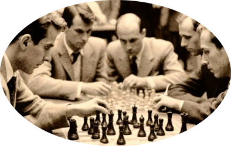
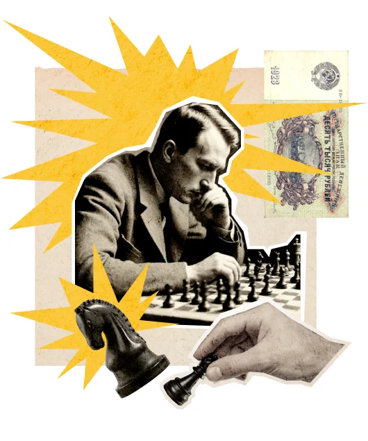

I
«Плодотворная дебютная идея»
Лекция о том, как один правильный первый ход способен изменить не только партию, но и судьбу целого города.
22 июня 1927Клуб «Картонажник»
Международный васюкинский турнир — лекция, сеанс одновременной игры на 160 досках и великое будущее шахматной мысли.
Программа вечера / 01
Чтобы поддержать Международный васюкинский турнир, посетите лекцию и сеанс одновременной игры гроссмейстера О. Бендера.

I
Лекция о том, как один правильный первый ход способен изменить не только партию, но и судьбу целого города.

II
Одновременная игра гроссмейстера О. Бендера — центральное событие вечера и первый практический шаг к будущей шахматной столице.
«Шахматы двигают вперёд не только культуру, но и экономику!»
Генеральный план / 02
Будущие источники обогащения васюкинцев — от железнодорожной магистрали до международного аэропорта.
Строительство железнодорожной магистрали Москва — Васюки.
Открытие фешенебельной гостиницы «Проходная пешка» и других небоскрёбов.
Поднятие сельского хозяйства в радиусе на тысячу километров: овощи, фрукты, икра и шоколадные конфеты.
Строительство специального дворца для главного шахматного события.
Размещение гаражей для гостевого автотранспорта.
Постройка сверхмощной радиостанции для передачи всему миру сенсационных результатов.
Создание аэропорта с регулярным отправлением почтовых самолётов и дирижаблей во все концы света, включая Лос-Анджелес и Мельбурн.
Турнирная афиша / 03
Последний ход / 04
Внесите 21 рубль 16 копеек на телеграммы — и пусть шахматная мысль отправится из Васюков во все концы света.